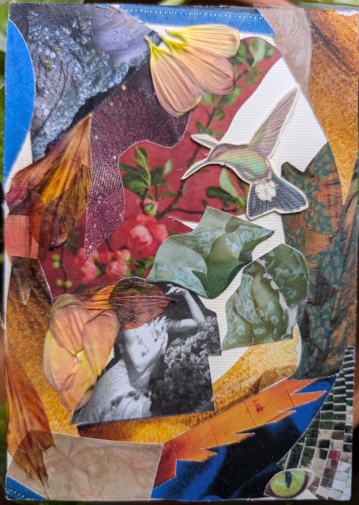

Welcome to my craft and making projects. For the last seven years I have worked in different mediums from paper making, baking, and collaging. I welcome you to peruse this site and consider your own creative endeavors. Have you longed to try something new, return to an old hobby or document your craft journey?
